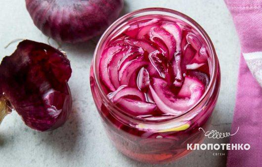
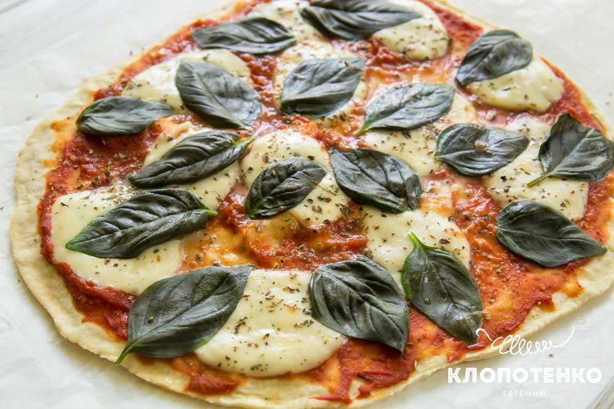
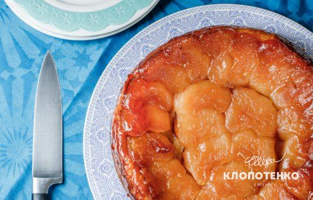
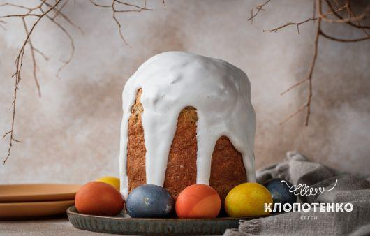
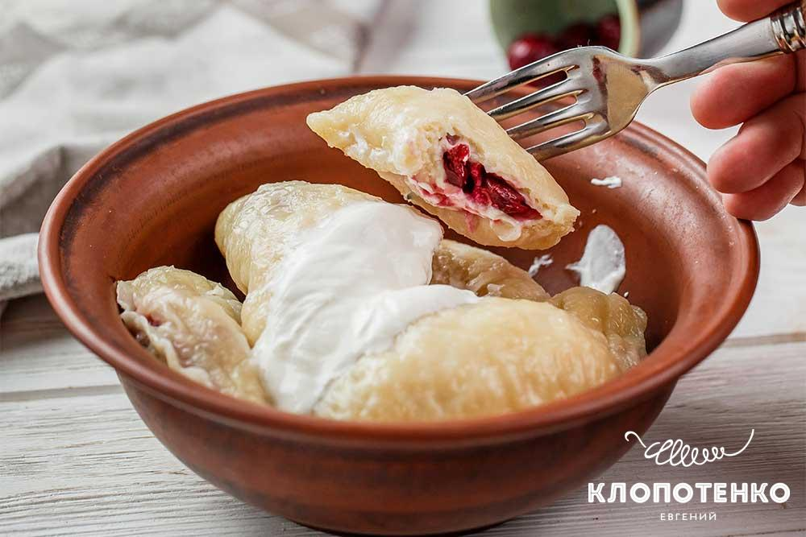
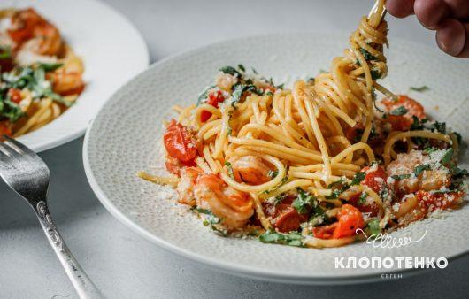
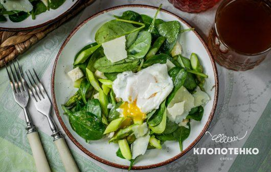
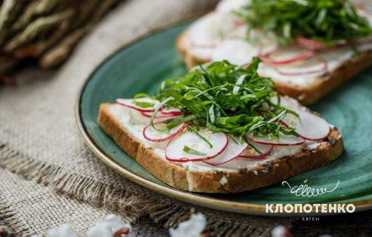

нові рецепти
Тонке тісто та волоські горіхи: простий рецепт домашньої медової пахлави
55 хвилин
10
помірна

Маринована цибуля: пікантний додаток для смачних страв
20 хвилин
1
легка
Рецепт сирників
20 хвилин
2
легка

Готуємо вдома піцу як в піцерії. Найсмачніший рецепт тіста.
30 хвилин
3
помірна
Показати ще
відео рецепти

Карамелізований і соковитий. Яблучний пиріг з листкового тіста від Євгена Клопотенка
2 години 20 хвилин
6
помірна

Дивовижна м’якість та чарівний цитрусовий аромат. Рецепт паски від Євгена Клопотенка
3 години
1
легка
Показати ще
що приготувати?
салати
другі страви
закуски
Українське
перші страви
випічка
оформити передплату
трендові рецепти

Пишні та смачні: вареники з вишнями на парі від Євгена Клопотенка
55 хвилин
4
помірна

Ексклюзивно від італійського шефа. Паста з креветками та томатами
20 хвилин
2
легка

Весняний настрій. Салат зі спаржею від Євгена Клопотенка
15 хвилин
2
легка

Святкуємо весну. Тости з сиром і редискою від Євгена Клопотенка
10 хвилин
1
легка
Показати ще
купуй зараз
Українська пшениця, 1 кг
100 грн
Книга "Зваблення їжею з українським смаком" з автографом
650 грн
Кулінарні листівки
250 грн
Кулінарні листівки
купити
купуй зараз